Este soy yo.Pero no empecé aquí.
Soy Moisés Sánchez. Detrás de lo que ves hay una vida de deporte. Y un momento que lo cambió todo.
Viaja conmigo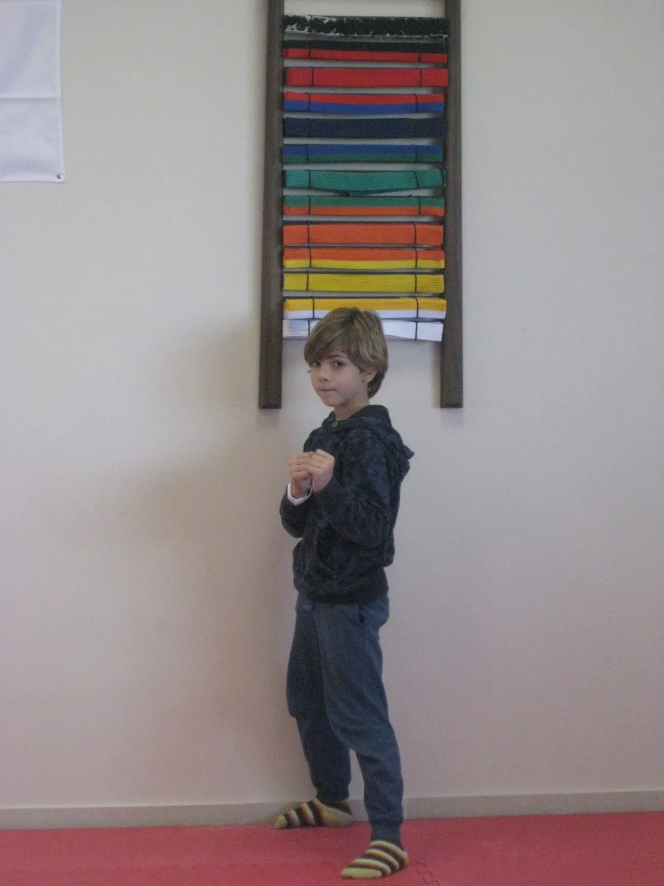
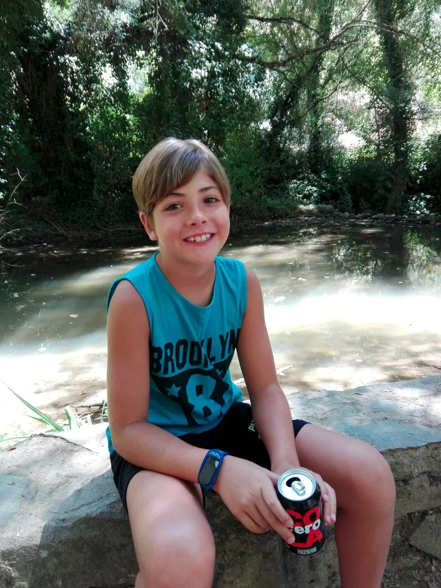
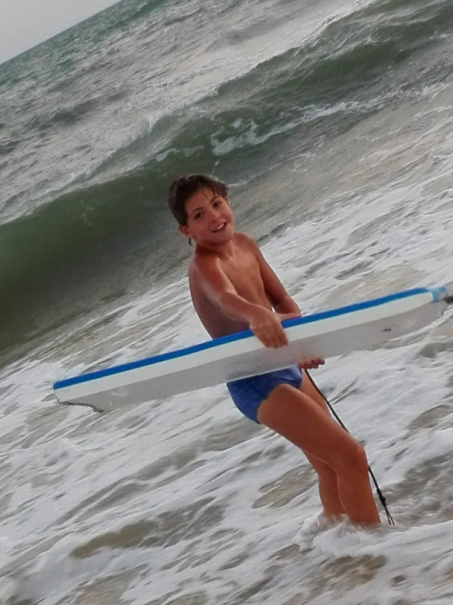
Tenía cuatro años.Y todo por descubrir.
El taekwondo empezó como una actividad extraescolar. Terminó siendo mi forma de crecer: entrenar, competir y volver a intentarlo.
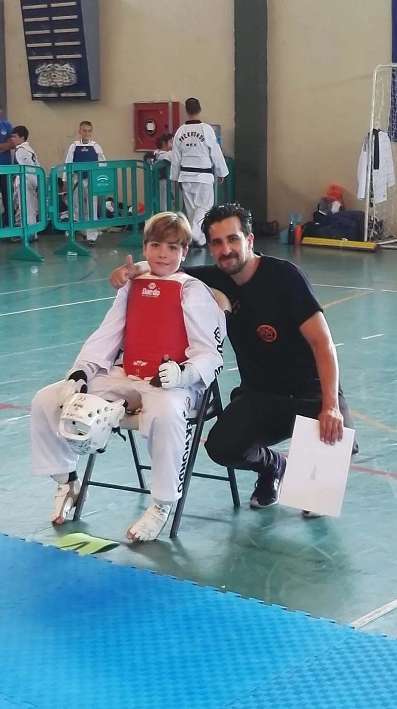
Aprender tambiénera enseñar.
Junto a mi padre construimos nuestra propia escuela de taekwondo. El deporte ya no era solo mi camino: también era algo que podíamos compartir.
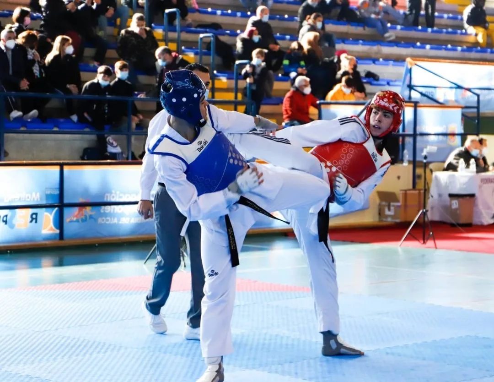
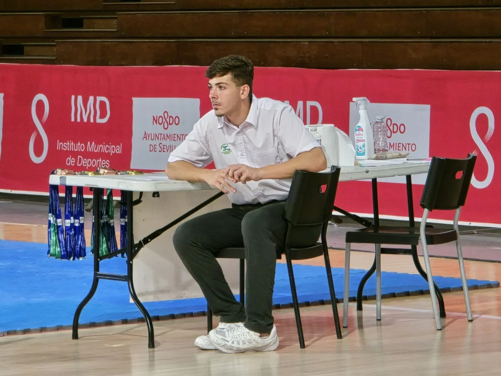
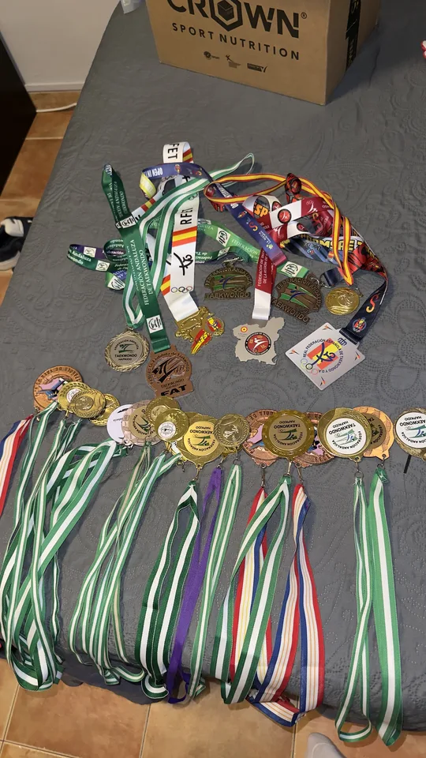
Mi mundo erael tatami.
Crecer compitiendo. Aprender a superarme. Con el tiempo llegaron el cinturón negro 3.º DAN y la formación como árbitro y entrenador nacional.
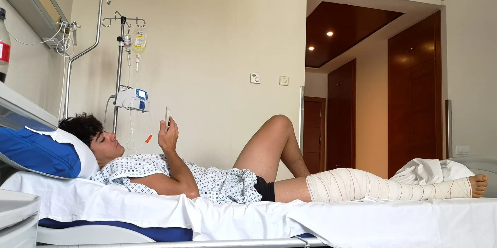
Hasta que tuveque parar.
Rotura de los ligamentos cruzados anterior y posterior, y lesión del menisco interno de la rodilla derecha. Quirófano. Cerca de un año de recuperación por delante.
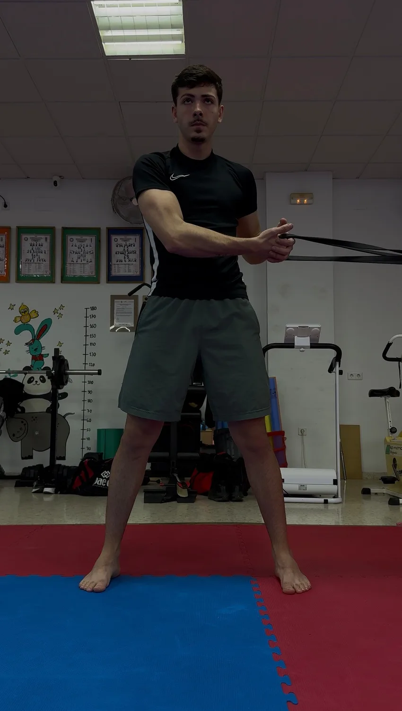
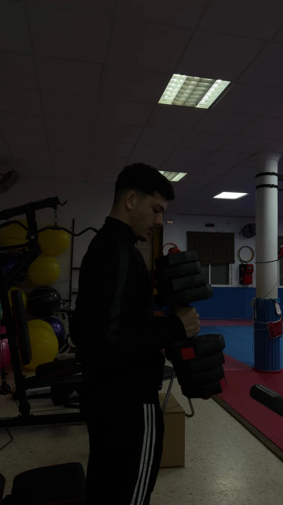
Esta vez, el retoera reconstruirme.
Pasé de entrenar y competir a recuperar capacidades. Adaptar las cargas, respetar los tiempos y volver a confiar en el proceso. Un paso cada vez.
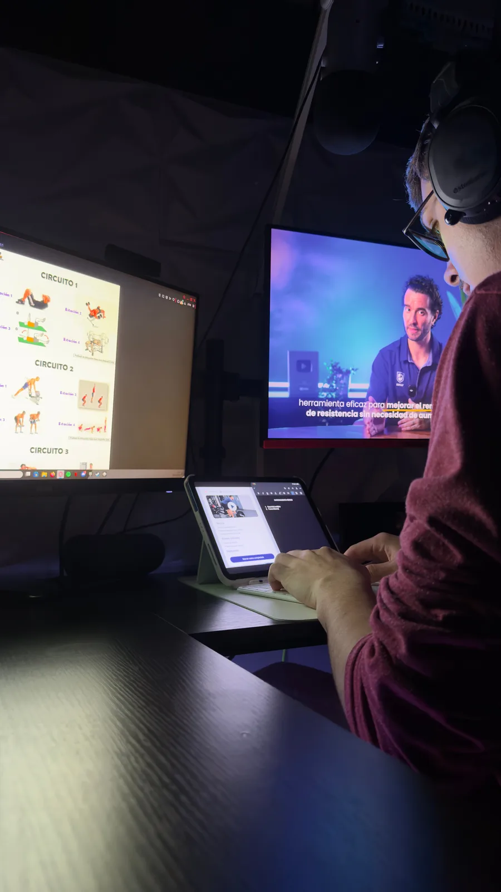
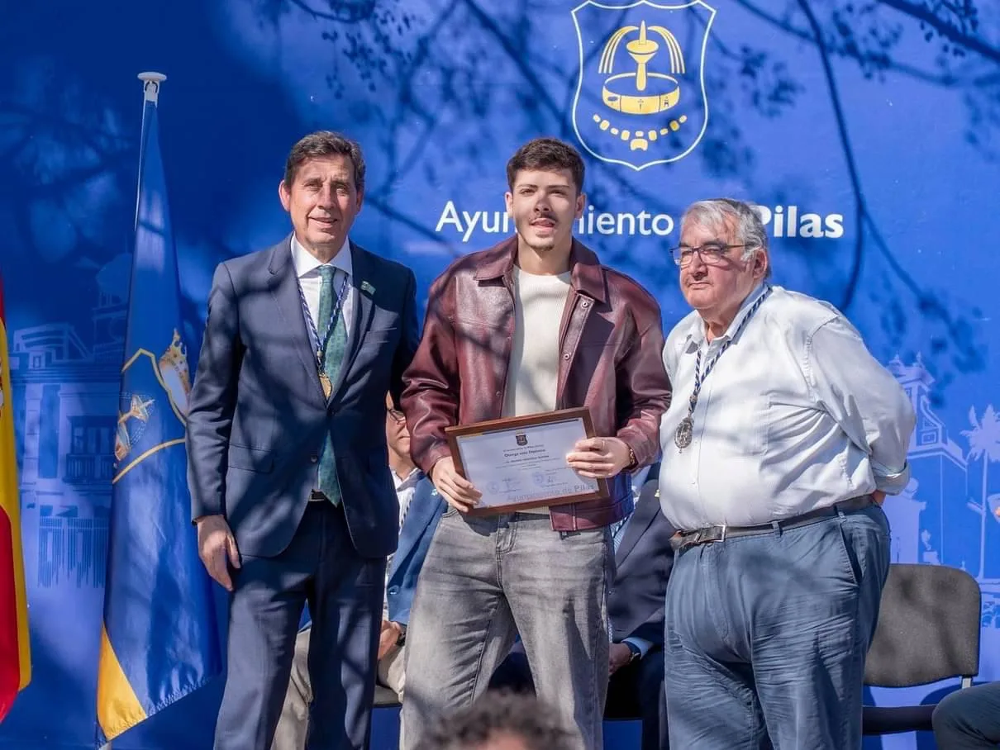
No era solo volver.Era entender cómo.
Me formé en preparación física, biomecánica, planificación y prevención de lesiones. Una necesidad personal se convirtió en una vocación: ayudar a otros.
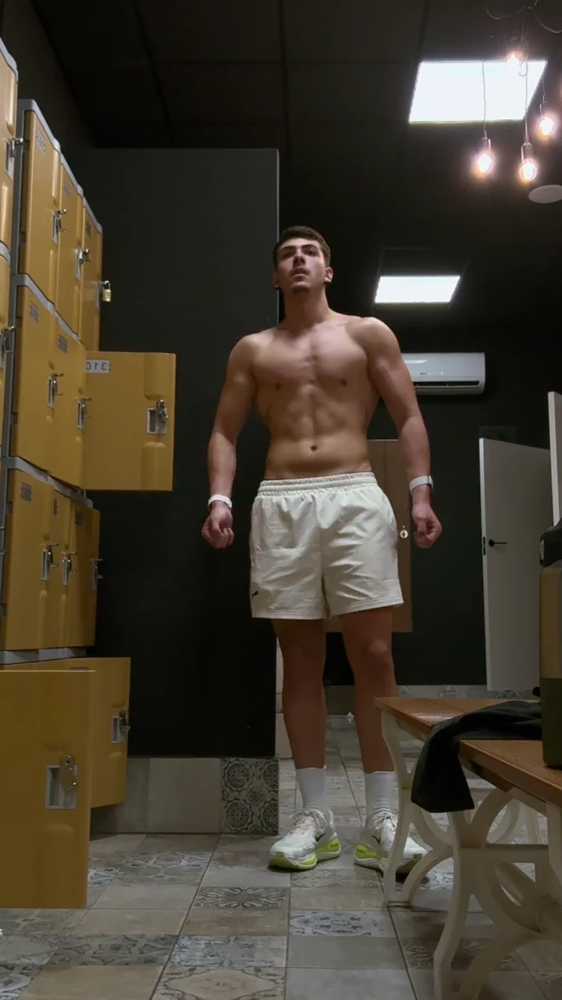
Cada etapa cuenta.
Todo forma parte de mí.
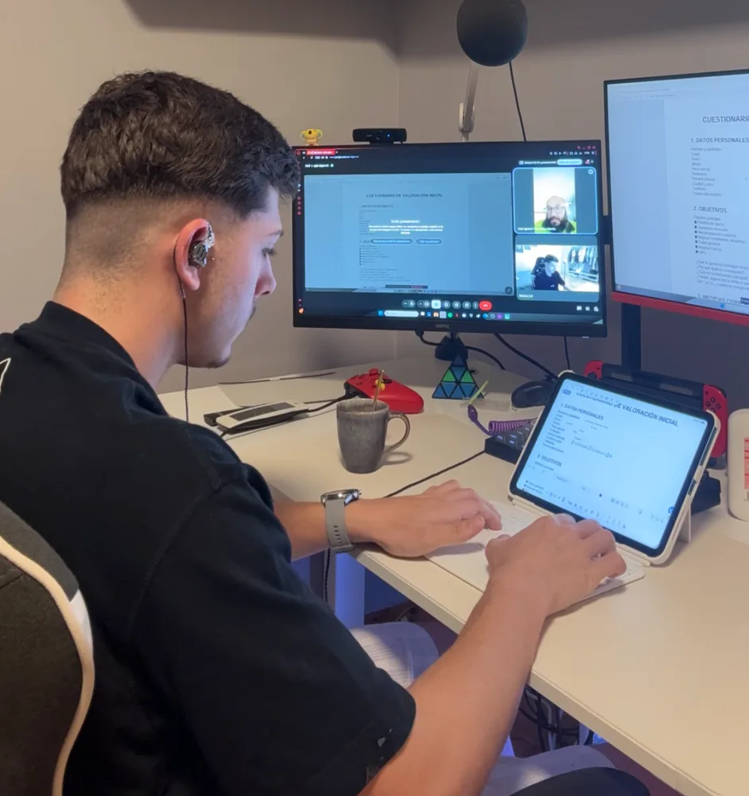
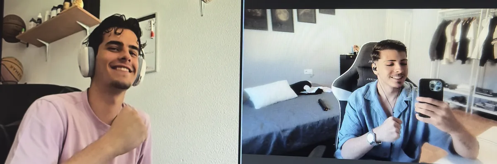
De todo ese camino,nace EXOM.
Planificación individualizada, seguimiento continuo y educación deportiva. No una rutina más: una estrategia que parte de ti, de tus circunstancias y de tus objetivos.
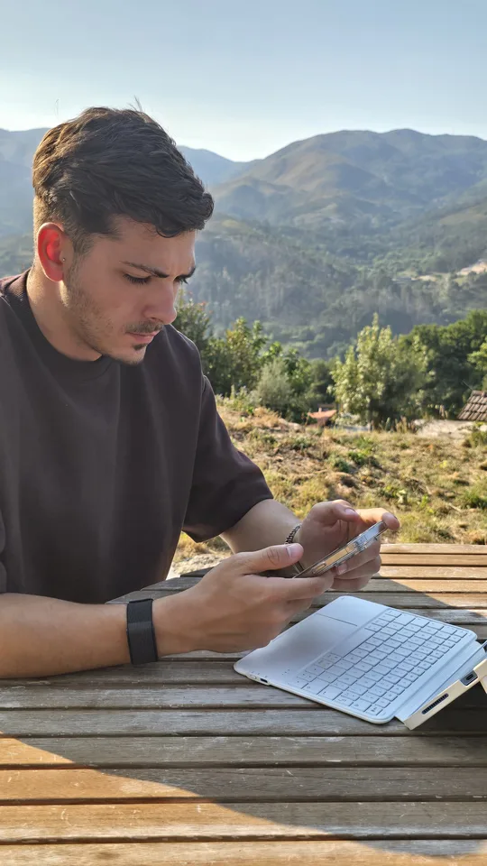
Este ha sido mi camino.Ahora, cuéntame el tuyo.
Aprender a adaptarme y reconstruirme cambió mi forma de entrenar. Hoy pongo esa experiencia al servicio de tu proceso.
Cuéntame tu objetivo